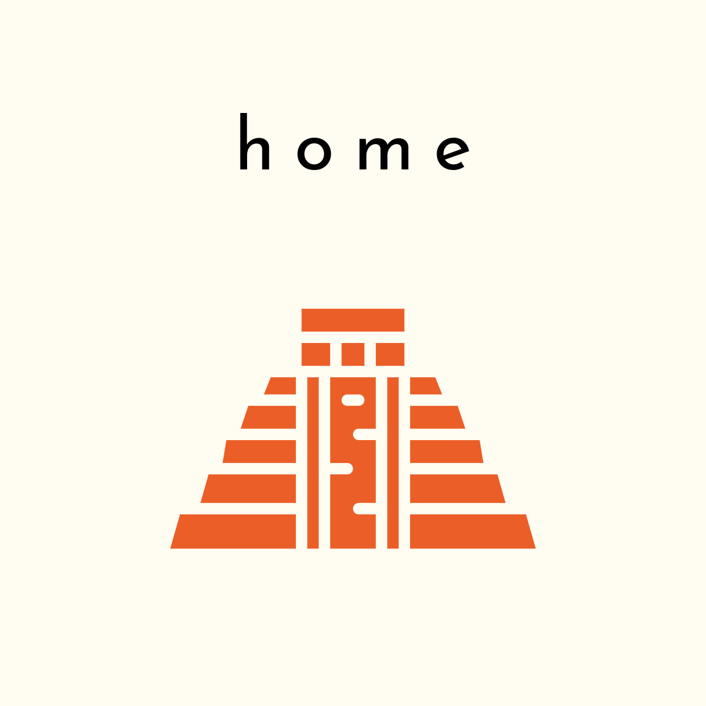
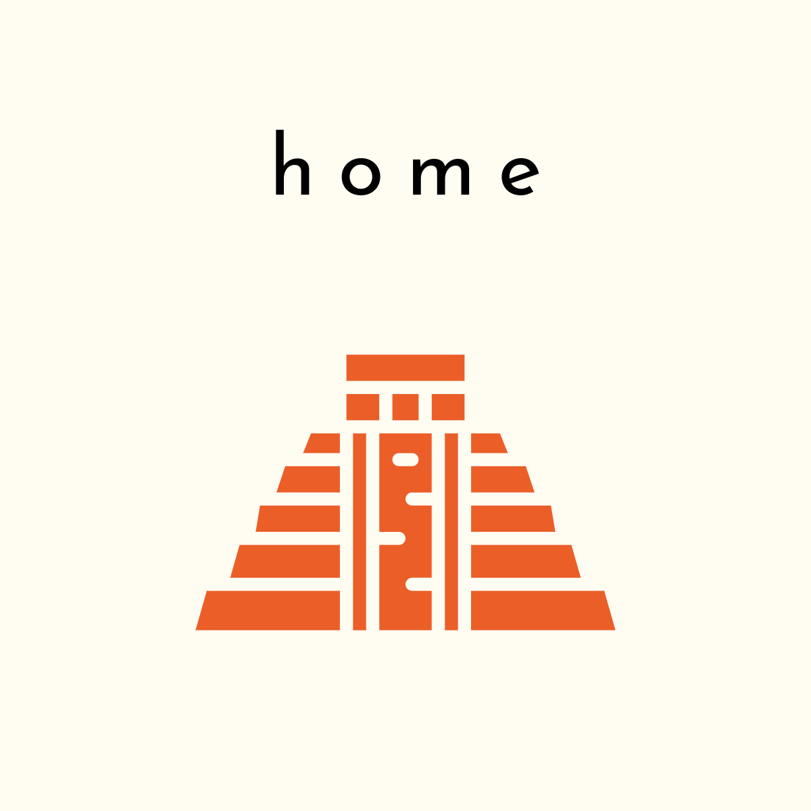
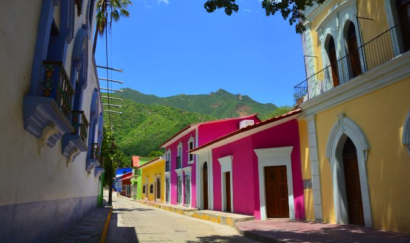
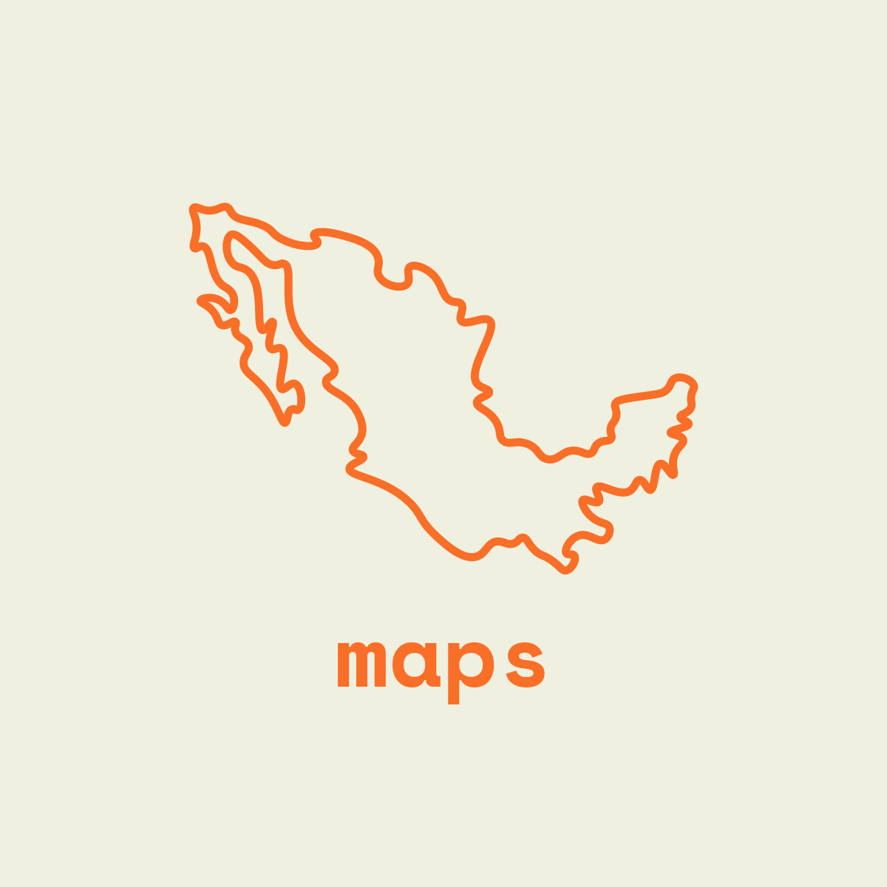
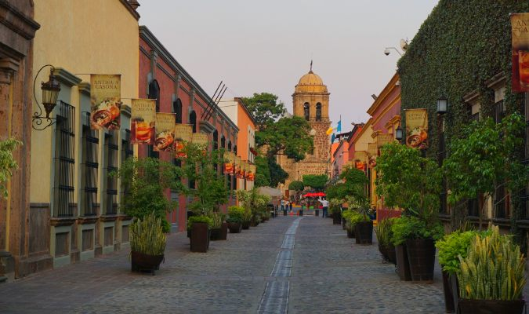

Overview
Purpose
The purpose of this website is to introduce magical towns (pueblos magicos) in Mexico and make the audience interested in them.
Through this website the audience will learn about the magical towns, Mexican culture, and be interested in traveling Mexico.
Audience
The audience will be anyone who is interested in traveling Mexico or Mexican culture.
Branding
Website Logo

Style Guide
Color Palette
| Primary | Secondary | Accent 1 | Accent 2 |
|---|---|---|---|
| [#ff9933] | [#ffe066] | [#33cc33] | [#e60000] |
Typography
Heading Font: [Verdana]
Paragraph Font: [Palatino, Helvetica, Verdana]
Normal paragraph example
What do you expect the most when you are traveling somewehre new? Are you expecting to experience completely new taste and food? Are you expecting to see something you have never seen before? Are you expecting to be immersed in the culture that is totally different then yours? Whatever the answers would be, I would like to suggest that people want magical experiences in their life, especially when travelinig new places. Pueblos Magicos have all the answers for you! These magical towns located all around Mexico will bring magic in your life. You will see something you have not seen before, you will experience new taste, and you will fall in love with the cultures that woven into the town and people's lives. We are just here to help you get there.
Colored paragraph example
What do you expect the most when you are traveling somewehre new? Are you expecting to experience completely new taste and food? Are you expecting to see something you have never seen before? Are you expecting to be immersed in the culture that is totally different then yours? Whatever the answers would be, I would like to suggest that people want magical experiences in their life, especially when travelinig new places. Pueblos Magicos have all the answers for you! These magical towns located all around Mexico will bring magic in your life. You will see something you have not seen before, you will experience new taste, and you will fall in love with the cultures that woven into the town and people's lives. We are just here to help you get there.
Navigation
Site Map
Content
Home page
Welcome to Pueblos Magicos! Come and experience magic.
Images for the Home page
 

Roads to Magic
Where and how to get to the magical experiences?
Images for the Page 2
 Information
What can you expect to see and experience?
Images for the Page 3
Wireframes
Create three wireframes for your site. One for each page and list them here
Home
little dots on the image means different images that can be scrolled.
My home page will portrait as many images as possible so it can attract more people to this website.
.png)
Maps
This page will show the map of the locations to the magical towns in Mexico.
If a user puts mouse cursor on a magical town, it will make the town bigger to show which town it is.
It will also show the image and name of the town with a link to more information.
.png)
Information
This page will give all the information to what a visiter can do in each town. It will also give information and links to each activity.
.png)